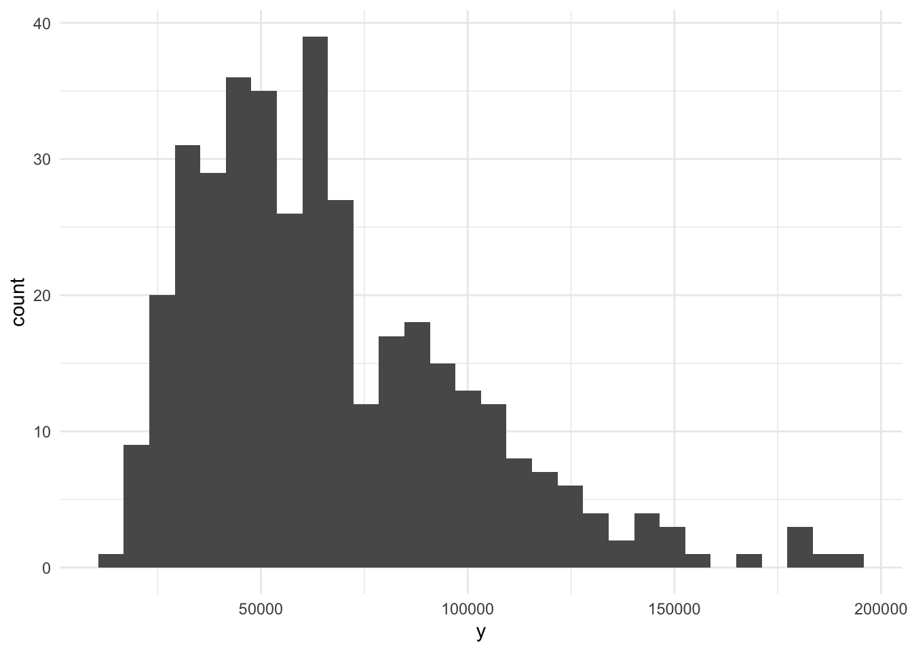
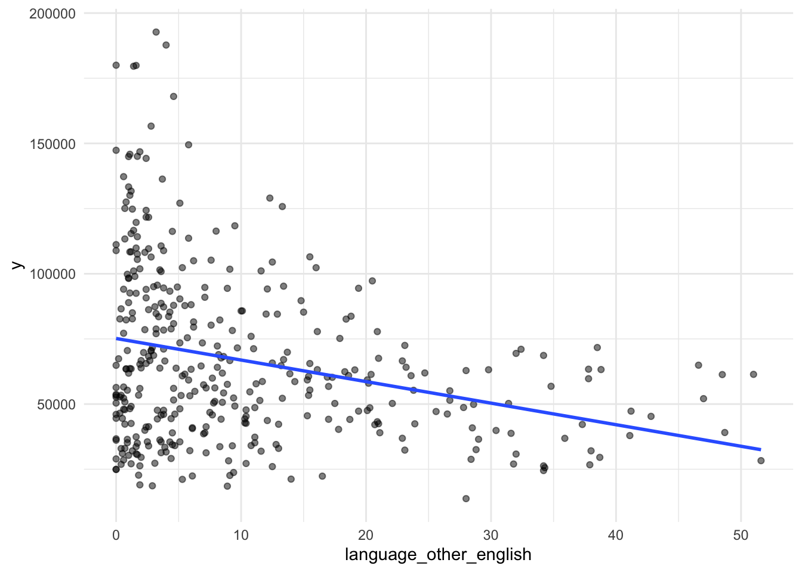
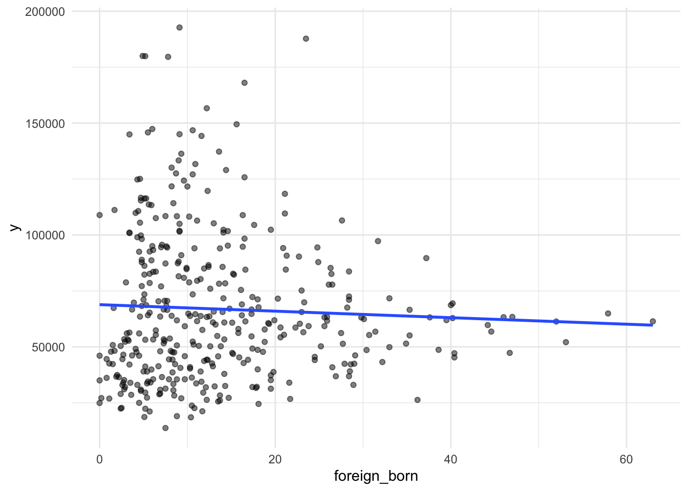
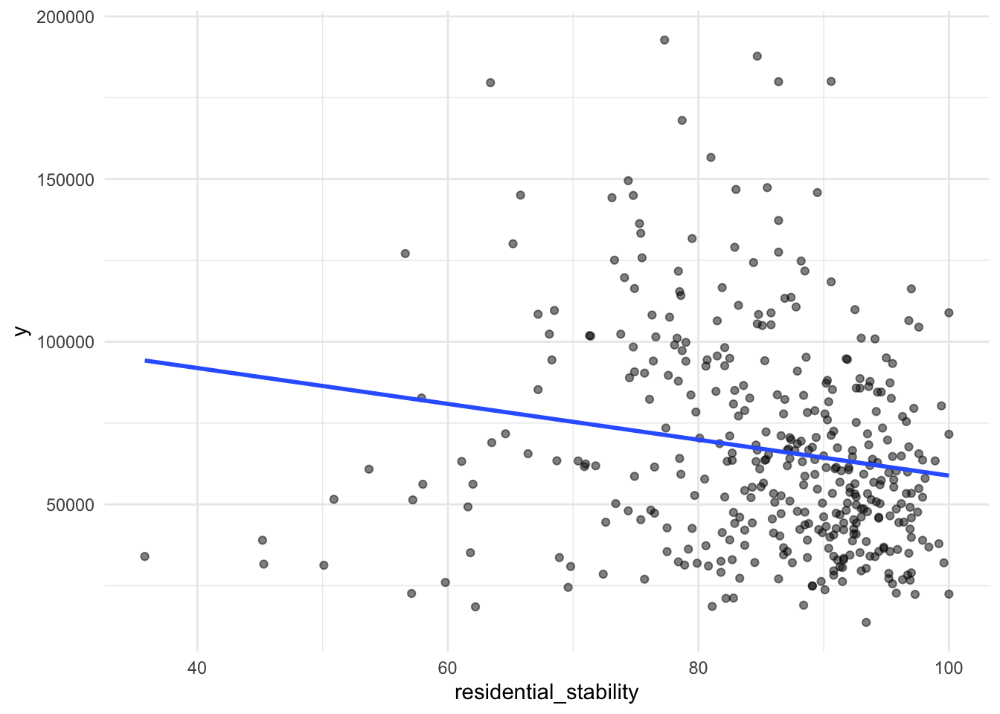
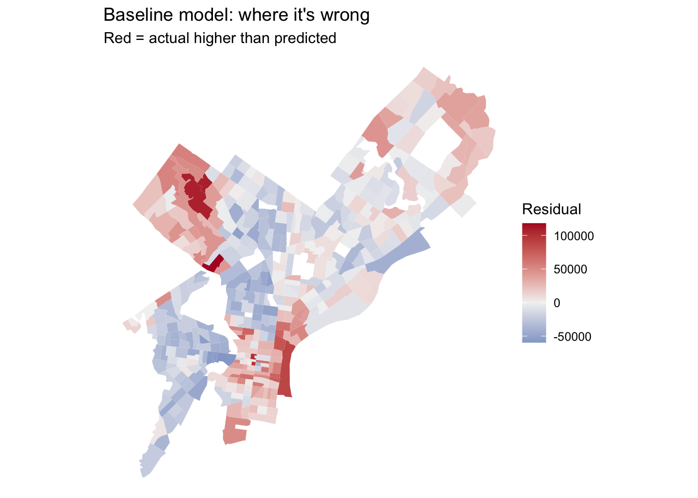
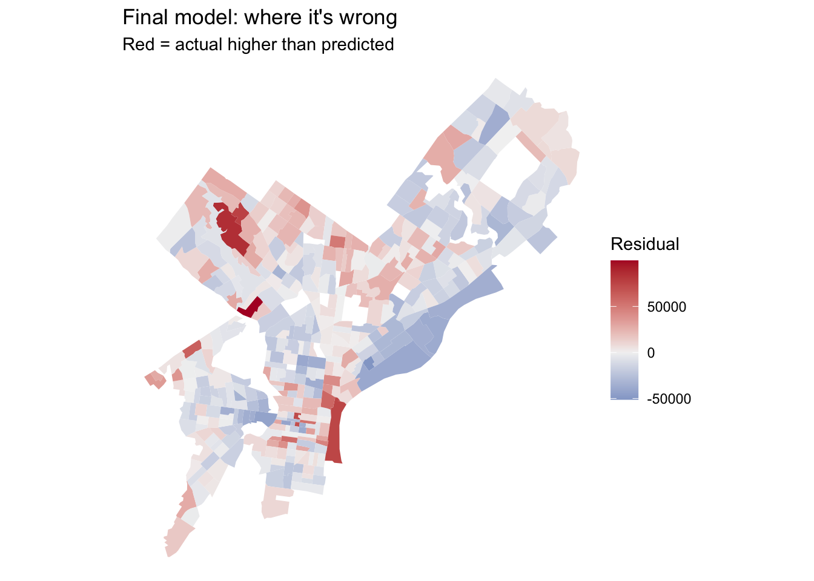
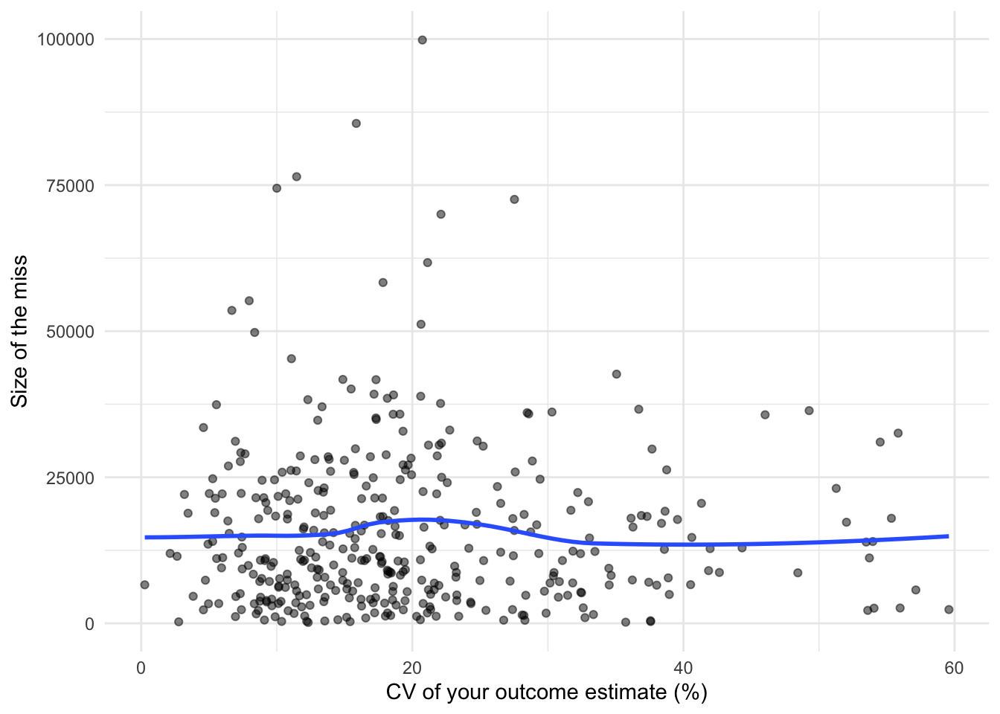

Code
library(tidyverse)
library(tidycensus)
library(sf)
library(caret)
Sys.getenv("CENSUS_API_KEY") != "" # should print TRUE[1] TRUEMUSA 5080 · Integrates Weeks 1–5 · Due Friday, October 16
This is not a competition. There’s no leaderboard and no target RMSE. The goal is to practice the full prediction workflow on a question you choose, and to find out what actually helps. Some features you’re sure will help won’t, and some you add on a whim will. Both are findings.
You’ll:
Timing. Parts 1–4 use only what we’ve covered through Week 5. You can finish them before the October 9 lecture. Part 5 is new material; the lecture explains it, and the instructions below give you the essentials.
Type the code yourself. The worked examples show the pattern. Your job is to apply it to your outcome and your data choices.
Every model is cross-validated on the same tracts with the same folds, so the rows in your model log are comparable. If a new variable has missing values, fill them (for example, 0 for a count, or the median with a note) or choose a different variable. The cv_rmse() helper below will stop and tell you if you break this rule.
Your outcome comes from the 2019–2023 ACS. Pull open data from 2023 or earlier (2021–2023 is ideal). Using 2025 data to predict a 2023 outcome uses information from the future, which a real prediction model would never have.
Don’t use any variable that’s built from your outcome or measures the same thing another way. Ask yourself: would an agency trying to predict this outcome for a tract have this variable? If the answer is “only because it’s basically the outcome,” leave it out.
library(tidyverse)
library(tidycensus)
library(sf)
library(caret)
Sys.getenv("CENSUS_API_KEY") != "" # should print TRUE[1] TRUEThis function runs 10-fold cross-validation with the same seed every time, so every model in your log is tested on the same folds. You don’t need to change it. Read it once so you know what it does.
ctrl <- trainControl(method = "cv", number = 10)
cv_rmse <- function(formula, data) {
df <- if (inherits(data, "sf")) st_drop_geometry(data) else data
vars <- all.vars(formula)
bad <- vars[sapply(vars, function(v) any(is.na(df[[v]])))]
if (length(bad) > 0) {
stop("These variables have NAs: ", paste(bad, collapse = ", "),
". Fill them or choose another variable (Rule 1: don't drop rows).")
}
set.seed(5080)
fit <- train(formula, data = df, method = "lm", trControl = ctrl)
fit$results$RMSE
}Every time you fit a new model, add a row. By the end, this table is the story of your assignment.
model_log <- tibble(
model = character(),
added = character(),
cv_rmse = numeric(),
notes = character()
)# Pulling these variables:
# % Who Speak a Language Other Than English: DP02_0115PE
# % Foreign-Born: DP02_0094PE
# % Lived in a different house 1 year ago (Stability): DP02_0080PE
philly_tracts <- get_acs(
geography = "tract",
state = "PA",
county = "Philadelphia",
variables = c(
median_income = "B19013_001",
language_other_english = "DP02_0115PE",
foreign_born = "DP02_0094PE",
residential_stability = "DP02_0080PE"
),
year = 2023,
output = "wide",
geometry = TRUE
) %>%
st_transform(2272)
|
| | 0%
|
|= | 1%
|
|= | 2%
|
|== | 3%
|
|=== | 4%
|
|=== | 5%
|
|==== | 6%
|
|===== | 7%
|
|===== | 8%
|
|====== | 9%
|
|======= | 9%
|
|======= | 10%
|
|======== | 11%
|
|======== | 12%
|
|========= | 13%
|
|========== | 14%
|
|========== | 15%
|
|=========== | 16%
|
|============ | 17%
|
|============= | 18%
|
|============= | 19%
|
|============== | 21%
|
|=============== | 22%
|
|================ | 23%
|
|================ | 24%
|
|================= | 25%
|
|================== | 25%
|
|=================== | 26%
|
|=================== | 27%
|
|==================== | 28%
|
|===================== | 29%
|
|===================== | 30%
|
|====================== | 31%
|
|======================= | 32%
|
|======================= | 33%
|
|======================== | 34%
|
|========================= | 35%
|
|========================= | 36%
|
|========================== | 37%
|
|=========================== | 38%
|
|=========================== | 39%
|
|============================ | 40%
|
|============================= | 41%
|
|============================== | 42%
|
|============================== | 43%
|
|=============================== | 44%
|
|================================ | 45%
|
|================================ | 46%
|
|================================= | 47%
|
|================================== | 48%
|
|================================== | 49%
|
|=================================== | 50%
|
|==================================== | 51%
|
|==================================== | 52%
|
|===================================== | 53%
|
|====================================== | 54%
|
|====================================== | 55%
|
|======================================= | 56%
|
|======================================== | 57%
|
|========================================= | 58%
|
|========================================= | 59%
|
|========================================== | 60%
|
|=========================================== | 61%
|
|=========================================== | 62%
|
|============================================ | 63%
|
|============================================= | 64%
|
|============================================= | 65%
|
|============================================== | 66%
|
|=============================================== | 67%
|
|=============================================== | 68%
|
|================================================ | 69%
|
|================================================= | 70%
|
|================================================= | 71%
|
|================================================== | 72%
|
|=================================================== | 73%
|
|=================================================== | 74%
|
|==================================================== | 75%
|
|===================================================== | 76%
|
|====================================================== | 76%
|
|====================================================== | 77%
|
|======================================================= | 79%
|
|======================================================== | 80%
|
|======================================================== | 81%
|
|========================================================= | 82%
|
|========================================================== | 83%
|
|=========================================================== | 84%
|
|=========================================================== | 85%
|
|============================================================ | 86%
|
|============================================================= | 87%
|
|============================================================= | 88%
|
|============================================================== | 88%
|
|=============================================================== | 89%
|
|=============================================================== | 90%
|
|================================================================ | 91%
|
|================================================================= | 92%
|
|================================================================= | 93%
|
|================================================================== | 94%
|
|=================================================================== | 95%
|
|=================================================================== | 96%
|
|==================================================================== | 97%
|
|===================================================================== | 98%
|
|===================================================================== | 99%
|
|======================================================================| 100%names(philly_tracts) [1] "GEOID" "NAME" "median_incomeE"
[4] "median_incomeM" "language_other_english" "DP02_0115PM"
[7] "foreign_born" "DP02_0094PM" "residential_stability"
[10] "DP02_0080PM" "geometry" philly_tracts <- philly_tracts %>%
mutate(
y = median_incomeE,
y_moe = median_incomeM,
y_cv = (y_moe / 1.645) / y * 100
)# How many tracts have no value for your outcome?
sum(is.na(philly_tracts$y))[1] 27# How reliable is it?
summary(philly_tracts$y_cv) Min. 1st Qu. Median Mean 3rd Qu. Max. NAs
0.2635 11.4650 17.5871 19.7956 24.9859 59.5818 27 philly_tracts %>%
mutate(reliability = case_when(
y_cv < 12 ~ "High",
y_cv <= 40 ~ "Moderate",
TRUE ~ "Low"
)) %>%
st_drop_geometry() %>%
count(reliability)# A tibble: 3 × 2
reliability n
<chr> <int>
1 High 104
2 Low 50
3 Moderate 254# What does the distribution look like?
ggplot(philly_tracts, aes(x = y)) +
geom_histogram(bins = 30) +
theme_minimal()
Only about 50/408 (about 12 percent) of the tracts have low reliability, so this data should be good to use. Low-reliability data has a high MOE and could potentially not represent the actual reality behind the data. Since low-reliability data often comes from areas where people are less likely to respond (often low-income areas that we want to study closely), we want to be careful when analyzing this data to not draw inaccurate conclusions.
tracts <- philly_tracts %>%
filter(
median_incomeE > 0,
!is.na(y),
!is.na(language_other_english),
!is.na(foreign_born),
!is.na(residential_stability)
)
nrow(philly_tracts)[1] 408nrow(tracts)[1] 381Answer: How many tracts did you lose, and what kinds of places are they?
I lost 27 rows after filtering; these are likely places with incomplete ACS data, often tracts with limited responses due to small populations.
ggplot(tracts, aes(x = language_other_english, y = y)) +
geom_point(alpha = 0.5) +
geom_smooth(method = "lm", se = FALSE) +
theme_minimal()
ggplot(tracts, aes(x = foreign_born, y = y)) +
geom_point(alpha = 0.5) +
geom_smooth(method = "lm", se = FALSE) +
theme_minimal()
ggplot(tracts, aes(x = residential_stability, y = y)) +
geom_point(alpha = 0.5) +
geom_smooth(method = "lm", se = FALSE) +
theme_minimal()
f1 <- y ~ language_other_english + foreign_born + residential_stability
m1 <- lm(f1, data = tracts)
summary(m1)
Call:
lm(formula = f1, data = tracts)
Residuals:
Min 1Q Median 3Q Max
-59534 -21443 -3018 15507 117919
Coefficients:
Estimate Std. Error t value Pr(>|t|)
(Intercept) 91586.1 13789.9 6.642 1.09e-10 ***
language_other_english -1512.5 220.6 -6.858 2.88e-11 ***
foreign_born 1013.0 225.5 4.492 9.38e-06 ***
residential_stability -273.7 157.9 -1.733 0.0838 .
---
Signif. codes: 0 '***' 0.001 '**' 0.01 '*' 0.05 '.' 0.1 ' ' 1
Residual standard error: 30800 on 377 degrees of freedom
Multiple R-squared: 0.1396, Adjusted R-squared: 0.1328
F-statistic: 20.4 on 3 and 377 DF, p-value: 2.867e-12model_log <- model_log %>%
add_row(model = "m1", added = "ACS baseline",
cv_rmse = cv_rmse(f1, tracts),
notes = "Baseline model using language, foreign-born population, and residential stability")
model_log# A tibble: 1 × 4
model added cv_rmse notes
<chr> <chr> <dbl> <chr>
1 m1 ACS baseline 30670. Baseline model using language, foreign-born popula…On tracts it hasn’t seen, the baseline model misses by about $30,670 per household.
tracts <- tracts %>% mutate(resid_m1 = residuals(m1))
ggplot(tracts) +
geom_sf(aes(fill = resid_m1), color = NA) +
scale_fill_gradient2(low = "#2166ac", mid = "grey95", high = "#b2182b", midpoint = 0) +
theme_void() +
labs(title = "Baseline model: where it's wrong",
subtitle = "Red = actual higher than predicted",
fill = "Residual")
From my analysis from my spatial statistics homework, I know that the areas with higher positive residuals are high-income areas of the city (around Center City and the northwestern part of the county). These also tend to the the majority-white areas of the city. Negative residuals tend to be in low-income areas of the city (particularly the majority-black ones), so we can conclude that this model tends to undershoot high-income areas and overshoot low-income areas.
Many of the city’s datasets on OpenDataPhilly are served through a Carto SQL API. You send a SQL query in a URL, and it sends back data. Ask for format=GeoJSON and st_read() reads the result directly, just like the Indego feed in Week 4.
The pattern:
https://phl.carto.com/api/v2/sql?format=GeoJSON&q=SELECT ... FROM table_name WHERE ...Three pieces of SQL are all you need:
SELECT the_geom, column1, column2 chooses which columns come back. Always include the_geom, or you get no geometry.FROM table_name chooses the dataset.WHERE ... filters rows. Filter in the query, not in R. Some tables have millions of rows, and pulling everything will be slow or fail.This helper builds the URL for you. Spaces and symbols in a URL need encoding, and URLencode() handles that.
carto_get <- function(sql) {
url <- paste0("https://phl.carto.com/api/v2/sql?format=GeoJSON&q=", URLencode(sql))
st_read(url, quiet = TRUE)
}# Layer 1: Property assessments
layer1 <- carto_get(
"SELECT the_geom, market_value, zoning
FROM opa_properties_public
WHERE market_value > 0
AND market_value IS NOT NULL"
) %>%
st_transform(st_crs(tracts))
# Layer 2: Real estate transfers
layer2 <- carto_get(
"SELECT the_geom, document_date, total_consideration
FROM rtt_summary
WHERE document_date >= '2023-01-01'
AND document_date < '2024-01-01'
AND total_consideration > 0
AND document_type = 'DEED'"
) %>%
st_transform(st_crs(tracts))Answer: Why these layers? What do you expect them to capture that the ACS variables don’t?
Because of the obvious disparity in residual values in high and low-income areas of the city, I decided to examine the real estate transfers in different areas of the city to help identify “desirable” areas with higher property values and more active housing markets. I want to see if desirable areas match exactly with the high residual values in my initial map.
I also want to examine the distribution of the white population because a glance at the white population map shows a near-exact overlap with my map of high residual values. This isn’t meant to imply that race itself causes the difference in income, but it helps explore my analysis on how immigrant populations tend to be much poorer and less stable than the settled-in white population.
tracts <- tracts %>%
mutate(
area_sqmi = as.numeric(st_area(geometry)) / 27878400
)
# Feature 1: Real estate transfer density
tracts <- tracts %>%
mutate(
n_transfers = lengths(st_intersects(., layer2)),
transfers_per_sqmi = n_transfers / area_sqmi
)
f2 <- y ~ language_other_english + foreign_born +
residential_stability + transfers_per_sqmi
model_log <- model_log %>%
add_row(
model = "m2",
added = "Transfer density",
cv_rmse = cv_rmse(f2, tracts),
notes = "Real estate transfers per square mile"
)
# Feature 2: Percentage of White residents
# Retrieve the White population estimate from ACS
# (B03002_003 = non-Hispanic White alone)
white_pop <- get_acs(
geography = "tract",
state = "PA",
county = "Philadelphia",
variables = c(white_population = "B03002_003"),
year = 2023,
output = "wide",
geometry = FALSE
)
total_pop <- get_acs(
geography = "tract",
state = "PA",
county = "Philadelphia",
variables = c(total_pop = "B01003_001"),
year = 2023,
output = "wide",
geometry = FALSE
)
# Join population data and calculate percentage White
tracts <- tracts %>%
left_join(
white_pop %>% dplyr::select(GEOID, white_populationE),
by = "GEOID"
) %>%
left_join(
total_pop %>% dplyr::select(GEOID, total_popE),
by = "GEOID"
) %>%
mutate(
pct_white = white_populationE / total_popE * 100
)
f3 <- y ~ language_other_english + foreign_born +
residential_stability + transfers_per_sqmi + pct_white
model_log <- model_log %>%
add_row(
model = "m3",
added = "White population percentage",
cv_rmse = cv_rmse(f3, tracts),
notes = "Percentage of tract population that is non-Hispanic White"
)
# Feature 3: Distance to City Hall
city_hall <- st_sfc(
st_point(c(-75.1636, 39.9526)),
crs = 4326
) %>%
st_transform(st_crs(tracts))
tract_pts <- st_point_on_surface(tracts)
tracts <- tracts %>%
mutate(
dist_ch_mi = as.numeric(
st_distance(tract_pts, city_hall)
) / 5280
)
f4 <- y ~ language_other_english + foreign_born +
residential_stability + transfers_per_sqmi +
pct_white + dist_ch_mi
model_log <- model_log %>%
add_row(
model = "m4",
added = "Distance to City Hall",
cv_rmse = cv_rmse(f4, tracts),
notes = "Distance to the urban core in miles"
)
model_log# A tibble: 4 × 4
model added cv_rmse notes
<chr> <chr> <dbl> <chr>
1 m1 ACS baseline 30670. Baseline model using language, fore…
2 m2 Transfer density 30303. Real estate transfers per square mi…
3 m3 White population percentage 21207. Percentage of tract population that…
4 m4 Distance to City Hall 21161. Distance to the urban core in miles Answer: Which spatial feature helped most? Did any feature you expected to help do nothing, or make CV RMSE worse? Why might that be?
The white population percentage helped the most, reducing the CV RMSE to about $21,207, compared with $30,670 for the baseline model. Real estate transfer density didn’t help much, only reducing the RMSE to $30,303. This shows that real estate transfers alone are not an especially good predictor of household income.
# Log transformation: real estate transfer density
tracts <- tracts %>%
mutate(log_transfers = log1p(transfers_per_sqmi))
f_log <- y ~ language_other_english + foreign_born +
residential_stability + log_transfers
model_log <- model_log %>%
add_row(
model = "m5",
added = "Log of transfer density",
cv_rmse = cv_rmse(f_log, tracts),
notes = "Uses log(1 + transfers per square mile) to reduce right skew"
)
# Squared term: distance to City Hall
tracts <- tracts %>%
mutate(dist_ch_sq = dist_ch_mi^2)
f_sq <- y ~ language_other_english + foreign_born +
residential_stability + pct_white + transfers_per_sqmi +
dist_ch_mi + dist_ch_sq
model_log <- model_log %>%
add_row(
model = "m6",
added = "Squared distance to City Hall",
cv_rmse = cv_rmse(f_sq, tracts),
notes = "Tests whether the relationship between distance and income is nonlinear"
)
# Categorical variable: White population percentage
tracts <- tracts %>%
mutate(
white_category = cut(
pct_white,
breaks = c(-Inf, 25, 50, 75, Inf),
labels = c("Low", "Moderate", "High", "Very high")
)
)
f_cat <- y ~ language_other_english + foreign_born +
residential_stability + white_category
model_log <- model_log %>%
add_row(
model = "m7",
added = "Categorical White population percentage",
cv_rmse = cv_rmse(f_cat, tracts),
notes = "Groups tracts into four categories based on non-Hispanic White population percentage"
)
# Compare all models
model_log# A tibble: 7 × 4
model added cv_rmse notes
<chr> <chr> <dbl> <chr>
1 m1 ACS baseline 30670. Baseline model using la…
2 m2 Transfer density 30303. Real estate transfers p…
3 m3 White population percentage 21207. Percentage of tract pop…
4 m4 Distance to City Hall 21161. Distance to the urban c…
5 m5 Log of transfer density 30841. Uses log(1 + transfers …
6 m6 Squared distance to City Hall 21228. Tests whether the relat…
7 m7 Categorical White population percentage 22650. Groups tracts into four…The squared-distance model performs almost as well as the best model, while the log transformation and categorical variables make predictions worse.
f_final <- y ~ language_other_english + foreign_born +
residential_stability + pct_white + transfers_per_sqmi +
dist_ch_mi
m_final <- lm(f_final, data = tracts)
summary(m_final)
Call:
lm(formula = f_final, data = tracts)
Residuals:
Min 1Q Median 3Q Max
-51188 -13202 -1696 9782 99842
Coefficients:
Estimate Std. Error t value Pr(>|t|)
(Intercept) 18067.602 10810.991 1.671 0.0955 .
language_other_english -651.989 159.552 -4.086 5.36e-05 ***
foreign_born 304.850 165.062 1.847 0.0656 .
residential_stability 265.162 132.568 2.000 0.0462 *
pct_white 803.986 41.380 19.429 < 2e-16 ***
transfers_per_sqmi 7.595 3.861 1.967 0.0499 *
dist_ch_mi -775.611 483.645 -1.604 0.1096
---
Signif. codes: 0 '***' 0.001 '**' 0.01 '*' 0.05 '.' 0.1 ' ' 1
Residual standard error: 21370 on 374 degrees of freedom
Multiple R-squared: 0.5891, Adjusted R-squared: 0.5825
F-statistic: 89.36 on 6 and 374 DF, p-value: < 2.2e-16model_log <- model_log %>%
add_row(
model = "final",
added = "White population percentage + transfer density + distance to City Hall",
cv_rmse = cv_rmse(f_final, tracts),
notes = "Combine the predictors retained based on CV RMSE"
)
model_log# A tibble: 8 × 4
model added cv_rmse notes
<chr> <chr> <dbl> <chr>
1 m1 ACS baseline 30670. Base…
2 m2 Transfer density 30303. Real…
3 m3 White population percentage 21207. Perc…
4 m4 Distance to City Hall 21161. Dist…
5 m5 Log of transfer density 30841. Uses…
6 m6 Squared distance to City Hall 21228. Test…
7 m7 Categorical White population percentage 22650. Grou…
8 final White population percentage + transfer density + distance… 21161. Comb…tracts <- tracts %>% mutate(resid_final = residuals(m_final))
ggplot(tracts) +
geom_sf(aes(fill = resid_final), color = NA) +
scale_fill_gradient2(low = "#2166ac", mid = "grey95", high = "#b2182b", midpoint = 0) +
theme_void() +
labs(title = "Final model: where it's wrong",
subtitle = "Red = actual higher than predicted",
fill = "Residual")


ggplot(tracts, aes(x = y_cv, y = abs(resid_final))) +
geom_point(alpha = 0.5) +
geom_smooth(se = FALSE) +
labs(x = "CV of your outcome estimate (%)", y = "Size of the miss") +
theme_minimal()
There doesn’t seem to be much of a trend between the absolute error and the CV of the income estimate, so there isn’t evidence that the biggest misses are in the least reliable tracts.
summary(m_final)
Call:
lm(formula = f_final, data = tracts)
Residuals:
Min 1Q Median 3Q Max
-51188 -13202 -1696 9782 99842
Coefficients:
Estimate Std. Error t value Pr(>|t|)
(Intercept) 18067.602 10810.991 1.671 0.0955 .
language_other_english -651.989 159.552 -4.086 5.36e-05 ***
foreign_born 304.850 165.062 1.847 0.0656 .
residential_stability 265.162 132.568 2.000 0.0462 *
pct_white 803.986 41.380 19.429 < 2e-16 ***
transfers_per_sqmi 7.595 3.861 1.967 0.0499 *
dist_ch_mi -775.611 483.645 -1.604 0.1096
---
Signif. codes: 0 '***' 0.001 '**' 0.01 '*' 0.05 '.' 0.1 ' ' 1
Residual standard error: 21370 on 374 degrees of freedom
Multiple R-squared: 0.5891, Adjusted R-squared: 0.5825
F-statistic: 89.36 on 6 and 374 DF, p-value: < 2.2e-16In my model, the feature that improved predicted performance the most was the percentage of non-Hispanic white residents in a census tract; this reduced the CV RMSE from approximately $30,303 to $21,207, a substantial improvement. However, my second feature, the real estate transfer density, did not significantly improve my model. In some ways, this makes sense — families living in expensive suburban homes are likely to have a stable source of income that gives them both the means and an incentive to remain in one place. On the other hand, young professionals in the city core making high salaries may be more transient; thus, the real estate transfer density cannot predict either low or high income accurately.
My strongest coefficient, pct_white, is 803.986. Its β̂ reading predicts about an $804 higher median household income for each 1-percent increase in non-Hispanic white population, if all other variables remain constant. Its ŷ reading is that, for 2 otherwise similar census tracts whose white population shares differ by 10 percentage points, the model predicts median household income to differ by approximately $8040.
However, there are still significant areas of error in my map. The model continues to undershoot the median income values of the wealthiest neighborhoods in Philadelphia. This suggests that my current predictors do not fully capture all the factors driving high incomes in these areas. I believe that adding another factor (percentage of those with a bachelor’s degree or higher) will explain the variance much better.
Finally, there doesn’t seem to be a strong visible trend between the CV of my outcome estimate and the absolute size of the residual. This suggests that tracts with greater relative uncertainty in their ACS income estimates do not necessarily have larger model prediction errors. However, it is difficult to tell how much remaining error is simply statistical noise. Some error may come from variations in ACS sampling, while others may come from genuine differences between the neighborhoods.